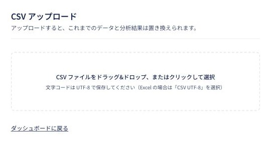
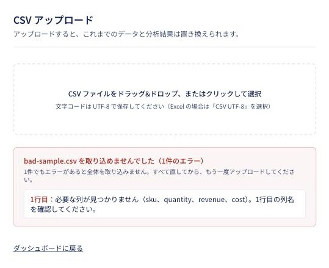

「本当にExcelと一致してますか？」に、胸を張って答えられる。
売上CSVをアップロードするだけで、3大KPIを自動集計・グラフ化し、AIが「今月何が起きたか」 「来月何をすべきか」を根拠つきで提案します。数字の計算は必ずプログラム側で行い、 AIには解釈だけを任せる設計にしました。
BACKGROUND
感覚で決まる打ち手と、3時間かかるレポート
月次の売上レポート作成にExcelで毎回3時間かかっている。社長・マーケ部長・営業が それぞれ別の資料を見ていて、会議のたびに数字の確認から始まる。そして次の施策が 担当者の感覚で決まっていて、なぜその判断をしたかを説明できない。 ただ数字を並べるだけのダッシュボードは他社でも作れるので、 今回は「AIが根拠つきで来月のアクションまで提案する」ことを一番のこだわりにしました。
集計はプログラムが正確に行い、AIには集計済みの数字だけを渡して解釈させる。 そういう役割分担にしました。
HOW IT WORKS
CSVを渡してから、提案が出るまで
CSVをアップロード
ドラッグ&ドロップで売上CSVを渡します。1件でもおかしい行があれば、 行番号つきで理由を示して全体を取り込みません。一部だけ取り込んで 合計がこっそりズレる事故を防ぐためです。
正確に集計する
売上・粗利・リピート率をプログラム側で計算します。AIには計算をさせません。
AIが解釈する
集計済みの正しい数字だけをAIに渡し、今月の総括と来月のアクションを、 根拠の数字つきで考えてもらいます。
二重に動かさない
分析には30秒〜1分半ほどかかります。その間は他の人の画面にも 「分析中です」と伝わるようにして、二重に実行されるのを防ぎます。
ダッシュボードに反映
総括・注目ポイント・注意して見るべき点・優先度つきのアクションが 画面に並びます。
アップロード直後から
数字はその場で、正しい形で見える
CSVを保存した時点で、3大KPIとカテゴリ別・SKUトップ10はすぐに表示されます。 AIの分析を待たなくても、数字だけは確実に見られる作りにしています。
来月どうするかまで
「広告を強化する」では終わらせない
アクション提案は具体策の粒度まで縛っています。「アウターのInstagram広告予算を 30%増額する」のように、読んだ人が明日、誰が何をするか迷わず決められる形にしました。 各アクションには根拠となる数字が必ず添えられます。
SCREENSHOTS
実際の画面（本物のスクリーンショット）
ここまでの図はイメージですが、以下は実際に動いている画面のスクリーンショットです （架空ブランド「LUMINA」の模擬案件のため、データはすべてダミーです）。



FEATURES
安心して任せるための工夫
数字はプログラム、意味づけはAI
集計をAIにやらせず、正確な数字を計算してから渡します。 「Excelと1円もズレずに一致すること」が絶対条件だったため、 AIに計算まで任せると間違いに気づく手段がなくなってしまいます。
1件でもエラーがあれば、全体を止める
CSVの一部だけを取り込んで合計金額がこっそりズレる、という事故を防ぐため、 1件でも不備があればファイル全体を取り込みません。行番号つきで、 どこをどう直せば良いかを表示します。
AI分析中は、誰にも二重に動かせない
分析が始まった瞬間にデータベース側へ「分析中」の印を残すため、 その間に別の人が画面を開いても「分析中です」と伝わります。 二重にAIが動いて余計な費用がかかる事故を防いでいます。
AIが落ちても、数字は必ず見られる
CSVの保存とAIの分析は別の処理に分けています。AI側で失敗しても、 KPIカードとグラフは影響を受けません。分析だけは ダッシュボードからいつでもやり直せます。
RUNNING COST
運用にかかるお金
月次運用は月1回のCSVアップロードが基本のため、ホスティング・データベースとも 無料枠の範囲に収まり、実測の月額運用費は約210円（AI分析1回ぶんの費用のみ）です。
データベースには無料プランを7日間アクセスが無いと自動停止する制限があります。 月1回の運用だと年末年始などに1週間以上開かない期間が起こりうるため、 1日1回だけ軽く接続する定期処理を追加費用なしで組み込み、対策しました。 あわせて、本番公開の設定を見直したところ、最初は「テストが失敗しても そのまま公開されてしまう」状態だったことにも気づき、設定ファイルに一行足すだけで、 テストが失敗したら公開も止まるように直しています。
UNDER THE HOOD
裏側で動いているもの（簡単に）
専門的な話は抜きにして、それぞれ何をしているかだけご紹介します。
SCOPE
できないこと（あえて対象外にしたもの）
今回はまず「CSVアップロード・KPI集計・AIによる分析コメント」に絞って作り込みました。 以下は意図的に対象外としています。
- Shopify API直接連携（日次自動更新） — 今回は月1回のCSVアップロードで運用する前提です
- 異常検知のSlackアラート
- PDFレポートの自動生成・メール配信
- 多店舗・多チャネル対応
- 独自ドメイン — Vercelの既定URL（*.vercel.app）で運用しています